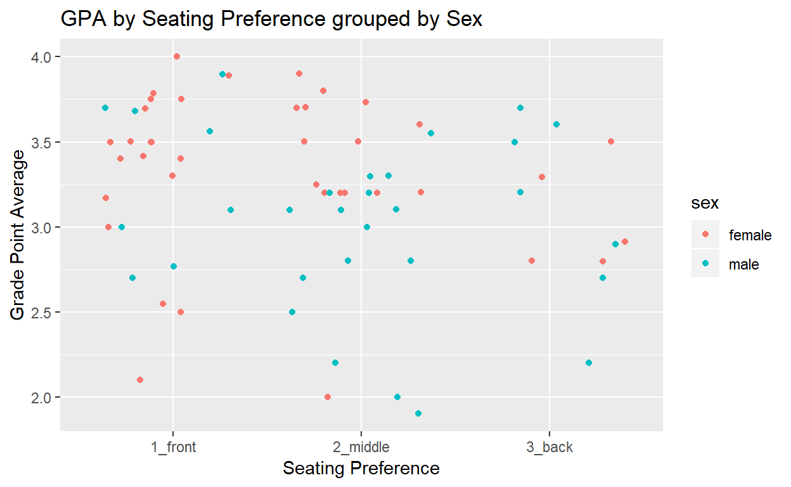

A tutorial on how to use R’s tidyverse package to make data tidy. Tidying data makes for a nice, clean dataframe to use in analysis. Tidyverse contains packages such as dplyr, which will be covered in this tutorial, for handling messy data wrangling in really good ways.
Data Analysis is a tough job, there are a lot of hurdles that can get in the way of meaningful studies of datasets. R has several packages to deal with these complications, one of them being the tidyverse package.
Tidyverse has many useful tools to clean up data and make it much easier to work with, one of which is called the dplyr package. Sometimes, there is a need to change variable names or group data, or make new columns with variables that you are needing to find, even subsetting your data and selecting the pieces you want as opposed to having to navigate the entire dataframe. Dplyr makes these things possible, and relatively simple to use. Here we will explore a few of these packages inside of the dplyr package. After tidying the data, tidyverse allows you to use a tool called a pipe operator %>% which allows you to feed your dataset directly into your functions, so you don’t have to worry about giving each function the data argument. With thses tools, it becomes much easier to run statistical analysis tests on it and/or graphical analysis using the ggplot2 package.
BIO314–Ecology and Evolution section A uses RStudio in the lab portion of the class for data analysis, however most of their data wrangling is done using basic R and long, complex R commands. BIO314-B uses Excel for most of their data wrangling and analysis. I am currently in section A of the class, but due to scheduling conflicts I have to take section B of the lab. Thus, I was inspired to take this project on because of the disconnect between the two classes. The goal of this project was to create a tutorial in tidyverse to open an easier pathway to data analysis in the class. Ultimately, I hope that this tutorial will help in simplifying the tidying and analysis processes and eventually unify the two sections so there is one, easy way for classes to manage their data.
When working with dataframes in R, it is important to remember that there are certain ways to name variables. R does not allow spaces or characters such as parentheses or forward slash.
For this tutorial, we’ll work with the m111survey dataset from the tigerstats package. This dataset was a survey of MAT111–Probability and Statistics students at Georgetown College
DT::datatable(m111survey, options = list(scrollX = TRUE))The datatable() function from the DT package can be used to make prettier tables.
We’ll save our m111survey dataset into two dataframes, A and B, to run base R and tidyverse methods on.
A <-
m111survey
B <-
m111surveySometimes, you will want to change variable names to make them nicer to work with. Base R and tidyverse both have ways to work with these. Dataframe A will be done using the colnames() function in the base R package. Dataframe B will be done using the rename() function in the dplyr package from tidyverse.
First, using colnames() from the base package, we can change each illegal variable name individually in separate lines. The function takes the illegal column name in quotes inside the brackets and replaces it with the desired column name as an assignment.
The command would look like:
colnames(data)[colnames(data)=="Illegal Name"] <- "newVarName"Now, an example using our newly created A dataset of survey data. Note that this must be done for each individual variable name you want to change. Also, the names in the m111survey data are legal, but I’m not crazy about the underscores, so I’m changing them for this tutorial.
colnames(A)[colnames(A)=="ideal_ht"] <- "idealHeight"
colnames(A)[colnames(A)=="weight_feel"] <- "wtFeel"
colnames(A)[colnames(A)=="love_first"] <- "loveFirst"
colnames(A)[colnames(A)=="extra_life"] <- "extraLife"
colnames(A)[colnames(A)=="enough_Sleep"] <- "enoughSleep"
DT::datatable(A, options = list(scrollX = TRUE))As you can see, this gets the job done okay, but it is messy to look at and pretty complex. Also, this takes five separate functions to do, so it is rather tedious. Surely, there has got to be a better way.
Let’s take a look at how the rename() function in the dplyr package can make this a lot more simple, and better yet, involve only one, easy to understand function.
dplyr’s rename() function is easy! It takes the dataset you’re using as the first argument and then you simply give your name change in the format shown:
df <-
rename(df, newVar1 = `Old Illegal Var`,
newVar2 = `Second Illegal`)The backticks show R that you might be feeding it illegal variable names and so it looks for those too. To save the dataframe with the new variables, simply use the assignment operator to save it. In this example, we wil take our B dataset and name it tidyB since it has the nicer, legal names.
tidyB <-
rename(B, idealHeight = `ideal_ht`,
wtFeel = `weight_feel`,
loveFirst = `love_first`,
extraLife = `extra_life`,
enoughSleep = `enough_Sleep`)
DT::datatable(tidyB, options = list(scrollX = TRUE))Clearly, this also gets the job done, but in a much cleaner, easier to understand way.
When working with data in R, very rarely will you want to work with the entire dataset at once. Often you will be looking at specific varaibles to search for patterns and statistical significance. This means that you will want to subset your data.
This can be done using the base R package, but it is tedious and requires you to remember which column numbers your desired variables are in. You’d need to call your dataset and then use brackets–you’d structure the command with your row numbers,column numbers. So you’d have data[rows,columns]. If you only want to use columns, then you’d simply leave the rows argument blank and just have column numbers after the comma inside a c() command.
This command would look like:
data <-
data[,c(col1, col2, col3, ... )]
DT::datatable(data)
A<-
A[,c(2,3,4,5,6,7)]
DT::datatable(A, options = list(scrollX = TRUE))Like before, the base R method gets the job done, but can be quite tedious depending on what your dataset looks like.
You can also use base R to select columns by their name, such as this:
df <- m111survey[, c("sex", "fastest")]
head(df)
sex fastest
1 male 119
2 male 110
3 female 85
4 female 100
5 male 95
6 male 100The main drawback for the base R method is that you have to save the subset to a new data variable if you want to continue working with your selected variables. Otherwise you’ll have to run a function inside of a function inside of a function… Slightly tedious and not as pretty. We’ll see that tidyverse has a nicer method to deal with selecting variables.
select() functionLike before, tidyverse includes a much simpler method to subsetting data, especially after you’ve given your data the legal names with the rename() function. This can be achieved using the select() function. Here, you will pipe your dataset in and just name the variables desired separated by commas. This looks relatively simple, and since you gave the dataset the nice names, it should be easy to remember. I’ll pipe this into a DT::datatable so the output is nicer.
The command would have the form:
data %>%
select(var1, var2, var3, ... ) %>%
DT::datatable() #If you wanted to make a prettier tableNow, an example of this using our tidyB dataset:
tidyB %>%
select(idealHeight, sex, fastest, seat) %>%
DT::datatable(options = list(scrollX = TRUE))This looks much nicer, and is a more user-friendly way of subsetting data.
group_by() functionSometimes, it is necessary to group data by a certain variable to compare and contrast. This can be done easily using dplyr’s group_by() function! Simply pipe your data into the group_by() function and give the variable name you want to group by as your argument. Then, you can run analysis on it to compare means, values, etc.
The command would look like:
data %>%
group_by(varName)group_by() into a summary using dplyr’s summarise() functionOften, you will find that you wish to find a summary of values in a dataset to use in analysis, such as a mean value. Dplyr has a handy tool for this in the summarise() function, which creates a new summary variable in the dataset to return the desired information. The summarise() function takes an argument in the form of the new variable name being equal to the value that you wish to assign this new variable. This is often paired with the group_by() function to find means of groups of data. For example:
data %>%
group_by(varName) %>%
summarise(mean=mean(varName))Now, we’ll use the group_by() and summarise() functions to find the mean fastest speed driven for each sex (Male or Female) in the survey. Note that you can do more than one summary variable at a time, simply separate by commas as shown in this example. Also, the ‘na.rm=TRUE’ argument is a way to let R know to ignore NA values in the counts where an expected cause was identified.
tidyBSummary <-
tidyB %>%
group_by(sex) %>%
summarise(avgSexSpeed = mean(fastest, na.rm=TRUE))
tidyBSummary %>%
knitr::kable(caption="Average Fastest Speed Driven by Sex of Georgetown College
MAT 111 Students")| sex | avgSexSpeed |
|---|---|
| female | 100.0500 |
| male | 113.4516 |
As you can see, the group_by() function is very useful for grouping items by a certain variable to find mean values of the group.
filter() to further select subsets of dataLet’s say that we wanted to find the mean GPA by sex, but only for GPAs above 2.5. Then we could use the filter() function from dplyr to filter out the GPAs that are below 2.5. The method for this would be:
tidyB %>%
group_by(sex) %>%
filter(GPA >= 2.5) %>%
summarise(avgGPA = mean(GPA, na.rm=TRUE))
# A tibble: 2 x 2
sex avgGPA
<fct> <dbl>
1 female 3.39
2 male 3.17mutate() function in dplyrSometimes, you may want to add a variable to a dataframe. This can be done with ease using dplyr’s mutate() function. The function takes the new variable assignment as its argument, so the command will look something like this:
data %>%
mutate(newVar = desiredWork(currentVar))For this example, we’ll use the mutate() function with an ifelse statement to check if the student made the Dean’s List (GPA >= 3.75).
tidyB %>%
filter(!GPA == "NA") %>%
mutate(deansList = ifelse(GPA >= 3.75, TRUE, FALSE)) %>%
select(GPA, deansList) %>%
DT::datatable(options = list(scrollX = TRUE))Lastly, there may be times when you wish to arrange your data by a certain variable. Dplyr has a way to do that too in the arrange() function. This is relatively straightforward: arrange() takes the function for how your want to arrange your data (most commonly desc() is the function used for descending, arrange() defaults to ascending order). The order function inside of arrange takes the variable to be ordered by as its lone argument. We’ll use this to arrange our data from above by GPA in descending order.
tidyB %>%
filter(!GPA == "NA") %>%
mutate(deansList = ifelse(GPA >= 3.75, TRUE, FALSE)) %>%
select(GPA, deansList) %>%
arrange(desc(GPA)) %>%
DT::datatable(options = list(scrollX = TRUE))As we’ve shown, tidyverse is an extremely useful tool to clean up data before analyzing it. The pipe operator allows for running multiple functions on a dataset at once, enabling users to accomplish multiple tasks in one code chunk–a feat that saves both time and space on machines. dplyr contains many functions that can be used to tidy data, making it legal and easy for R to understand, which should help make the task of analyzing data much simpler.
This can be easily applied in BIO 314 because of the nature of the data worked with in the course. Most of the data is hand collected, and there is not always the guarantee that the data is always uniform and clear. Having tidyverse in your toolkit enables you to run meaningful statistical and graphical analysis to find patterns, without a lot of the headache that R’s base package can cause.
For our concluding example, we’ll use ggplot2 and dplyr to create a scatterplot and a summary of GPA against seating preference by sex to see what happens.
tidyB %>%
group_by(sex, seat) %>%
filter(!GPA == "NA") %>%
summarise(avgSeatGPA = mean(GPA, na.rm=TRUE)) %>%
knitr::kable(caption="Average GPA by Seating Preference for each Sex")| sex | seat | avgSeatGPA |
|---|---|---|
| female | 1_front | 3.353000 |
| female | 2_middle | 3.378667 |
| female | 3_back | 3.061600 |
| male | 1_front | 3.301250 |
| male | 2_middle | 2.859375 |
| male | 3_back | 3.114286 |
tidyB %>%
filter(!GPA == "NA") %>%
ggplot(aes(x=seat,y=GPA)) +
geom_jitter(aes(color=sex)) +
labs(x="Seating Preference",
y="Grade Point Average",
title="GPA by Seating Preference grouped by Sex")
The tools we’ve covered in tidyverse and ggplot for tidying and simple graphical analysis can be powerful in determining which variables to look at for hypothesis testing and statistical analysis in lab reports in the BIO 314 Ecology and Evolution lab.